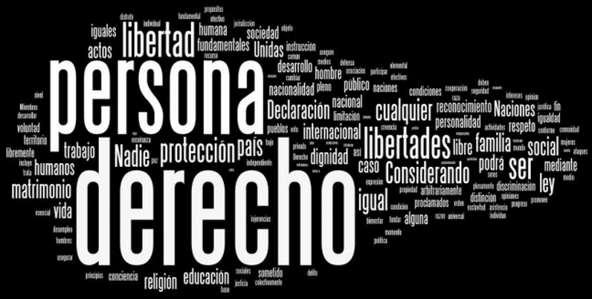

Los derechos humanos emergentes son reivindicaciones legítimas de la sociedad civil dirigidas a la formulación de nuevos o renovados derechos humanos. Hace sesenta años que se redactó la Declaración Universal de los Derechos Humanos. Desde entonces, tanto las sociedades nacionales como la sociedad internacional, han sufrido profundas transformaciones a medida que se intensificaba la globalización, apareciendo como resultado nuevas y apremiantes necesidades humanas. Los derechos humanos emergentes pretenden traducir estas nuevas necesidades en nuevos derechos.

Pero no todos los derechos humanos emergentes son estrictamente nuevos. La globalización plantea nuevos retos y recuerda los aún pendientes en materia de derechos humanos. Por ello, los derechos humanos emergentes son, por una parte, aquellos derechos que surgen ante la rápida y constante evolución de las sociedades globalizadas y, por otra parte, un conjunto de derechos que emergen tras haber permanecido “sumergidos” en el olvido o en la indiferencia de los estados y del conjunto del sistema internacional.
Entre los derechos humanos emergentes nos encontramos desde formulaciones estrictamente novedosas, como el derecho a una renta básica, hasta nuevas interpretaciones de derechos clásicos, como por ejemplo el derecho a acceder a los medicamentos, una prolongación del clásico derecho a la salud.
A pesar de esta dualidad entre nuevos derechos y actualizaciones de los clásicos, el concepto de derechos humanos emergentes nace de una visión integradora de los derechos humanos. Pretende acabar con la dicotomía histórica en la que se han dividido los derechos humanos: civiles y políticos y económicos, sociales y culturales. Y pretende superar las contradicciones entre los derechos colectivos y los individuales.
Los derechos emergentes suponen una nueva concepción de la participación ciudadana, dando voz a actores nacionales e internacionales que tradicionalmente han tenido un nulo o escaso peso en la configuración de las normas jurídicas nacionales, como las ONG, los movimientos sociales y las ciudades. Son, por lo tanto, reivindicaciones de la sociedad civil que aspira un mundo más justo y solidario.
Estas reivindicaciones han adoptado distintas formulaciones, entre las que destacan la Declaración Universal de Derechos Humanos Emergentes, elaborada en el marco del Forum Universal de las Culturas de Barcelona en septiembre de 2004, y aprobada en el Forum de Monterrey (México) en noviembre de 2007.